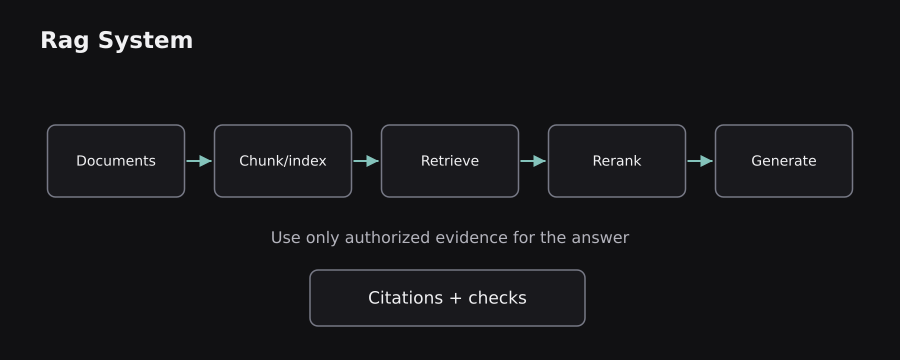
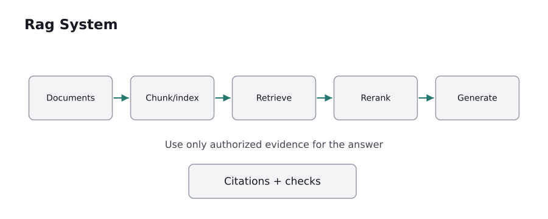

ENGINEERING BLOG / CHAPTER 10 OF 10
Building and Evaluating Real ML and Language Systems
Download chapter PDF ↓Knowing architectures is not enough to ship a reliable system. The final chapter joins datasets, training, retrieval, generation, deployment, and monitoring into one engineering picture. It also explains when a simpler model is the better choice.
10.0 — Define the task before choosing the model
Begin with a specific decision or output contract. “Build an AI application” is not a measurable requirement. “Classify support tickets into six labels within 200 milliseconds at a specified acceptable recall” is a testable one. “Answer policy questions only from approved internal documents, with citations and an abstention when evidence is missing” is another.
Separate the product into input, expected output, failure cost, and operating constraints. A model with excellent average accuracy may still be unacceptable if it routinely fails on high-priority exceptions. An expensive generative model is often unnecessary for straightforward numerical prediction or document categorization.
For tabular forecasting, compare linear models and tree ensembles before deep networks. For narrow text categories, compare TF-IDF with logistic regression against a small pretrained encoder. For open-ended grounded writing, compare prompting or retrieval-assisted generation. In each case, make the baseline reproducible and hold the evaluation rules constant.
Analogy: picking a model is like selecting an engine for a vehicle: the route, load, maintenance requirements, and budget matter more than choosing the most impressive technology in isolation.
10.1 — Dataset quality, labeling, and data governance
A dataset has more than examples: it has a sampling process, labeling policy, consent or legal basis, retention rules, and an intended population. Record where the data came from, what was excluded, which columns can change, and how labels were produced. Annotations often need written guidance so different humans apply the same categories consistently.
Train–validation–test separation must reflect deployment. For repeated users, group-aware splits may be essential. For evolving behavior, chronological splits may be more realistic than a random split. For text, detect near duplicates; for images, detect related crops; for time series, avoid using observations that will not yet exist when predictions are made.
Data preparation should be fitted on training data only. That includes scaling, vocabulary construction for classical NLP, target encoding, feature selection, and imputation statistics. A scikit-learn pipeline can help keep transformations and models inside each cross-validation fold. Reference: scikit-learn common pitfalls.
Privacy is also a technical property. Unnecessary personal data increases risk, and confidential records should not enter external inference services without authorization and appropriate safeguards. A well-designed dataset can make a small model more valuable than a larger model trained on flawed evidence.
10.2 — A dependable classical ML baseline
Suppose the task is to predict a categorical outcome from a modest tabular dataset. A baseline should include imputation for missing features, scaling when the estimator requires it, a simple classifier, and a held-out evaluation. The important structure is preprocessing + estimator in one pipeline so that inference uses the same transformations as training.
from sklearn.datasets import load_iris
from sklearn.model_selection import train_test_split
from sklearn.pipeline import make_pipeline
from sklearn.preprocessing import StandardScaler
from sklearn.linear_model import LogisticRegression
from sklearn.metrics import accuracy_score
X, y = load_iris(return_X_y=True)
X_train, X_test, y_train, y_test = train_test_split(
X, y, test_size=0.25, random_state=42, stratify=y
)
model = make_pipeline(StandardScaler(), LogisticRegression(max_iter=1000))
model.fit(X_train, y_train)
print(accuracy_score(y_test, model.predict(X_test)))
# Score depends on the chosen data split and software version
This example uses the bundled Iris dataset to demonstrate the flow, not a realistic production target. The StandardScaler learns its mean and scale only on training data through the pipeline. stratify=y preserves approximate class proportions in a randomized split. No reported accuracy should be interpreted as an unbiased estimate of performance in an unrelated application.
Real pipelines add schema validation, reproducibility records, error analysis, and an explicit plan for retraining when input distributions change.
10.3 — Neural training loops: the mechanics that matter
A neural training loop repeats five operations: load a batch → run a forward pass → calculate loss → compute gradients → update parameters. With PyTorch, automatic differentiation tracks tensor operations and computes parameter gradients when loss.backward() runs. An optimizer such as Adam or SGD then adjusts the parameter values.
import torch
model = torch.nn.Linear(2, 1)
optimizer = torch.optim.SGD(model.parameters(), lr=0.01)
x = torch.tensor([[1.0, 2.0]])
y = torch.tensor([[4.0]])
optimizer.zero_grad()
loss = ((model(x) - y) ** 2).mean()
loss.backward()
optimizer.step()
This performs one illustrative optimization step. It does not prove that the resulting model is accurate or converged. zero_grad() clears previously accumulated gradients; backward() computes derivatives; step() updates weights according to the optimizer. Reference: PyTorch autograd tutorial.
Real training also requires validation, learning-rate scheduling, checkpointing, mixed-precision choices, early stopping when appropriate, and tracking seeds and library versions. Training loss alone measures fit to observed batches, not reliability on new data.
10.4 — Fine-tuning language models and choosing adaptation methods
A pretrained language model offers a useful starting point because expensive broad-language learning has already occurred. Fine-tuning adapts its behavior using task-specific examples. For a text classifier, this may be a small encoder with a classification head. For a generative assistant, this may be supervised examples of desired responses or parameter-efficient adapters such as LoRA.
There is a distinction between supervised fine-tuning (SFT) and preference optimization. SFT learns to produce reference responses. Preference approaches use information about which response is preferred. DPO (Direct Preference Optimization) is one method that uses pairs of preferred and rejected responses under a specific training objective; it differs from classic reinforcement learning with a separate reward model and policy-optimization loop. Reference: DPO.
Common mistakes: fine-tuning to store rapidly changing company policy, including private training examples without an approved data basis, optimizing only for writing style while neglecting factuality, and evaluating on examples too similar to training data. Retrieval is frequently a better mechanism for changing facts; fine-tuning is often more suitable for stable task behavior and format.
The deployment cost also matters. A small fine-tuned model may save inference money at scale, but training and maintenance add fixed costs that must be justified.
10.5 — Retrieval-augmented generation from first principles
Retrieval-Augmented Generation (RAG) gives a generative model outside information at answer time. A simple pipeline is ingest documents → split into coherent chunks → index text/embeddings → retrieve relevant chunks → optionally rerank → construct a cited prompt → generate → verify. The language model does not automatically acquire permanent knowledge from the retrieved documents.
A practical hybrid system uses lexical search for exact terms and dense embeddings for semantic similarity. Their rankings can be combined with methods such as Reciprocal Rank Fusion. Reranking uses a stronger query–document comparison model on a small candidate set, improving relevance at additional latency cost. Metadata and access controls must be applied before unauthorized content can be exposed.
For example, a user asks “What does our handbook say about travel reimbursements?” The retrieval layer fetches the relevant authorized policy excerpt. The generation layer paraphrases it and cites the source. If no relevant approved source appears, the application should state that the evidence is insufficient instead of producing a confident guess.
Two distinct evaluations are necessary: did retrieval find the evidence (recall@k)? And did the answer use the evidence faithfully (groundedness)? High retrieval recall cannot guarantee a faithful response. Reference: RAG paper.
 
10.6 — Structured outputs, tools, and human approval
A language model may be asked to produce a JSON object, decide which tool to call, or explain why a certain action is appropriate. These capabilities should be treated as a proposal generation layer, not permission to perform arbitrary side effects. The product still needs input validation, authorization, deterministic constraints, logging, and safe execution boundaries.
Consider a support assistant proposing refund_order(order_id, amount). The model can help interpret intent, but the backend must check whether the user owns the order, whether the amount is allowed, and whether the transaction has already been processed. A model-generated JSON shape is not proof that its contents are safe. Schema validation catches formatting errors, not business-rule violations.
For destructive or financial actions, a human-in-the-loop approval flow can show the proposed action, affected resources, and expected consequences before any write occurs. Tool outputs and retrieved documents are untrusted input; a malicious page could contain instructions attempting to redirect the assistant. Such content must not override the application's system-level authority or user permissions.
Separation of concerns: language models interpret ambiguous text; software enforces deterministic rights and invariants. This boundary remains necessary even when the model is highly capable.
10.7 — Evaluation: offline metrics, adversarial cases, and calibration
Build an evaluation set that resembles actual product requests, including difficult, rare, and high-cost failures. For classification, track per-class precision and recall, confusion matrices, and calibration. For regression, use MAE, RMSE, error distribution, and performance across important groups or time periods. For retrieval, measure recall@k, MRR, and ranking quality. For generation, inspect groundedness, factual consistency, instruction following, refusal behavior, and output validity.
Calibration asks whether a claimed probability corresponds to observed frequency. If many events predicted at 0.8 happen only half the time, the model is overconfident. Evaluation scores should be broken down by slice: language, device, document length, customer cohort, or input domain when relevant and appropriate.
Adversarial and boundary cases include ambiguous negation, contradictory retrieved passages, missing data, unusually long contexts, repeated requests, prompt-injection attempts, and unseen terminology. Human review helps detect subtle failures that a single automated metric can miss.
Do not confuse a demonstration with measurement. “It answered three questions well” is an anecdote. A reproducible benchmark specifies data, scoring rules, model versions, sampling settings, and uncertainty. Without that specification, comparisons can mislead.
10.8 — Deployment architecture, performance, and observability
A production service needs more than a checkpoint file. Typical pieces include input validation → preprocessing/tokenization → model inference → output validation → logging/metrics. Large language systems may also include retrieval, reranking, prompt construction, tool gateways, caches, and asynchronous jobs. Each added service creates another potential failure boundary.
Measure both latency and throughput. Time to first token matters for perceived responsiveness; output tokens per second matters for long responses; end-to-end latency includes network, retrieval, and safety checks. Monitor memory, request queue length, cache use, timeouts, error rates, cost per completed request, and task-level quality signals.
Version everything that affects behavior: model checkpoint, tokenizer, preprocessing logic, prompts, index version, data schema, and evaluation suite. A new embedding model can make an existing vector index inconsistent unless the stored documents are re-embedded appropriately.
Privacy and security requirements include secrets management, least-privilege access, encrypted transport, data-retention policy, and isolation between users. Incident response plans should cover both infrastructure failures and harmful or unreliable model outputs. Reliability is an architectural concern, not a final user-interface polish step.
10.9 — Choosing the right approach and what comes next
A useful high-level decision map is: structured numerical data → traditional ML baseline; short text labels → sparse features or an encoder; complex image/speech data → task-suitable deep architectures; open-ended language generation → decoder or encoder–decoder model; changing private knowledge → authorized retrieval plus an appropriate model. These are starting points, not laws.
Evaluate competing designs with the same task metrics and realistic resource constraints. A larger model is not always better engineered. An impressive architecture can fail if its evidence is stale, labels are inconsistent, or its permission model is unsafe. Conversely, a modest and well-tested system can be genuinely valuable.
The field continues to evolve across multimodal representations, longer contexts, efficient attention, mixture-of-experts routing, small specialized models, and improved evaluation. The central fundamentals remain durable: data determines what can be learned; objectives determine what is optimized; architecture determines what information can interact; evaluation determines whether the system actually works.
Final synthesis: you have followed the complete chain from labeled examples and loss functions through classical ML, neural networks, deep learning, text preprocessing, embeddings, recurrent models, attention, Transformers, BERT/GPT/T5, and modern inference optimizations. Understanding those links is more useful than memorizing model names. It lets you reason clearly about why a system works, why it fails, and what to change next.
Sources and further reading
These sources supplement the original explanations. The uploaded PDFs and cheatsheets informed the topic coverage; their illustrations and prose are not republished.